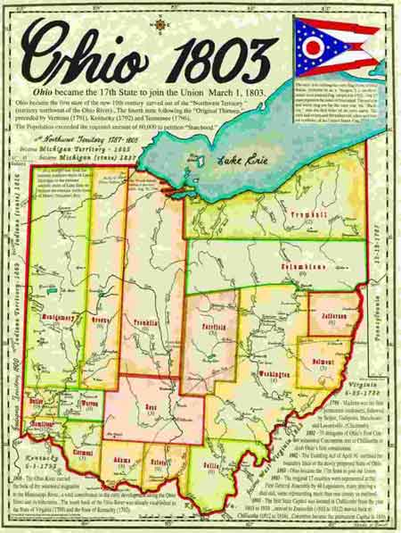
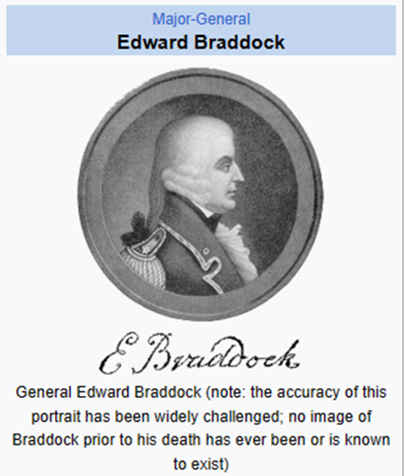

Ward-Thomas Museum


Salt Springs
Ward — Thomas
Museum
Home of the Niles Historical Society
503 Brown Street Niles, Ohio 44446
Click here to become a Niles Historical Society Member or to renew your membership
Click on any photograph to view a larger image, click on image again to zoom into photograph.
|
Early map of the Connecticut Western Reserve area marked with the location of the salt springs, Mosquito Creek and future site of Niles. |
 |
1803 Ohio County Map. Note that at this time, Trumbull County was marked along Lake Erie. Later, this area would be divided into several separate counties. It was long held that Ohio had been admitted to the Union in 1803. However, during the 150 Sesqui-Centennial celebration of 1953 it was discovered that Congress had never completed the actual congressional paperwork that finalized Ohio as the 17th state. In 1953, Congress again admitted Ohio to the Union of States and made it retroactive to the original 1803 date. |
|
Lewis Evans Ohio Map of 1755 shows the Salt Springs existence was known in 1755. At this time, the French controlled the area from Fort Duquesne (Pittsburgh) westward. Evans was a cartographer whose maps were used by Braddock in his 1755 attempt to take Fort Duquesne. PO1.651 |
Salt Springs There were actually four separate springs on the site, all within a 200 foot radius. The Salt Springs, a magnesia, Sulphur, and a lithia spring. Long before the French defeat (French-Indian War) in 1763 opened the territory to the white man, generations of Indians boiled the water for salt and used the waters of the other springs for medicinal purposes. |
Weathersfield Township map illustrating the location of the Salt Springs area. PO1.658 |
According to the 1787 map attributed to Thomas Jefferson, a salt spring is located somewhere within the city limits of Youngstown, Ohio. |
Please note that the upper reaches of the Beaver River were later renamed Mahoning River. |
Youngstown
Archeology Originally, Youngstown was a Native town known as Mahoning Town (not to be confused with the nearby New Castle, PA suburb of Mahoning Town). Just as a Native town grew up around the Niles salt springs (Salt Lick Town), apparently a town also grew up around the Youngstown salt spring. |
|
|
||
This illustration is from a painting by Joseph N. Higley, from a photograph taken by him about 1903, just before the Salt Springs were covered over by the B & O railroad fill. PO1.1493 |
Before 1755, when Lewis Evans marked the Salt Springs on his map of the region, red man and white man had been extracting precious salt from the famous springs. In 1796, Augustus Porter reached the Salt Springs with a survey party. He described it as a two or three acre site, with a plank vat full of water and with kettles at hand for boiling out the salt residue. The Salt Springs were an important asset and were probably an important consideration when General Samuel Holden Parsons bought the first tract of land in the Western Reserve, which included the springs. General Holden was one of the three judges appointed by Governor St. Clair for the whole Northwest Territory which embraced the Western Reserve. The springs were an attraction for many years.
The first road in Trumbull County led to the Salt Springs, following
the ancient Mahoning Indian Trail. Reuben Harmon, the
first permanent settler in Weathersfield Township, bought part
of the Salt Springs tract. He was the only taxpayer in 1801. |
|
The spring at which Mr. Kennedy stands is the old salt one. It is hard to stand beside them and not be struck with the idea that the little bubbling fountain was what first attracted the white man to this part of the country and caused the Mahoning Valley to become one of the greatest manufacturing centers of the country. PO1.1492 Ohio Historical Marker, The Salt Springs. |
The Old Salt Springs has been a historical landmark of the area since the early days. When settlers first came to this area they found the Massassauger Indians camped near the springs, only one of four such springs within 200 miles. The Indians made salt there and used the water for medicinal purposes. To protect the springs, Mr. and Mrs. J.S. Kennedy, who owned the farm on which the springs were located, went to court in 1903 to try and prevent the B & O railroad from crossing the farm and burying the springs. They lost, however, and the springs are now 40 feet beneath the railroad bed. And so, the salt springs, shown on maps as far back as 1755, were lost forever. Historical Marker for Salt Springs. In 1755, surveyor Lewis Evans underscored the importance of the springs by noting it on his “General Map of the Middle British Colonies in America.” This enticed immigrants from western Pennsylvania to the region. In addition to the salt itself, the abundance of wildlife near the spring ensured good hunting in the area. Side B In 1903, railroad tracks covered the once-famous salt springs. “Mahoning” is said to be derived from the Lenape word mahonink, meaning “at the [salt] lick.” Ohio Historical Marker, The Salt Springs |
|
|
|
||
| From the Youngstown Vindicator
dated November 25, 1903. The B & O has graded its roadbed up to within a few hundred yards on both sides of the old spring and the only reason the famous fountains are not now covered with earth is because the present owner of the farm on which the springs are located, Mrs. F. S. Kennedy, has gone to into court and tried to save the springs and prevent the railroad from crossing the farm. The spring at which Mr. Kennedy stands is the old salt one. It is hard to stand beside them and not be struck with the idea that the little bubbling fountain was what first attracted the white man to this part of the country and caused the Mahoning Valley to become one of the greatest manufacturing centers of the country. The salt water from the spring binds the past to the present and it is a pity that the first halting place of the white man in the Western Reserve cannot be preserved. It stands in the midst of historical surroundings, for one mile away the great (President William) McKinley first saw light of day and but a few hundred yards away is the river bank along whose shores the great (President James A.) Garfield once drove canal mules. The springs are located in a remarkably pretty glen and the spot whereon they stand would make a beautiful little park.” |
||
|
|
||
|
French-Indian War The French and Indian War (1754–1763) was a theater of the Seven Years' War, which pitted the North American colonies of the British Empire against those of the French, each side being supported by various Native American tribes. At the start of the war, the French colonies had a population of roughly 60,000 settlers, compared with 2 million in the British colonies. The outnumbered French particularly depended on their native allies. Two years into the French and
Indian War, in 1756, Great Britain declared war on France, beginning
the worldwide Seven Years' War. Many view the French and Indian
War as being merely the American theater of this conflict; however,
in the United States the French and Indian War is viewed as
a singular conflict which was not associated with any European
war. French Canadians call it the guerre de la Conquête
('War of the Conquest'). |
||
|
|
||
|  General Edward Braddock |
General Braddock In 1754, the French and British were in the midst of a rush to control the strategically important Ohio River Valley. That year, the French established a series of forts in what is now western Pennsylvania. The French forts included Fort Duquesne, near the Forks of the Ohio River where modern-day Pittsburgh is located. Tasked with capturing the French strongholds, British General Edward Braddock marched west with an army of British soldiers, Indian allies, and American provincial troops and began a campaign that would soon end in failure. On July 9, 1755, French and Native American warriors from Fort Duquesne deftly defeated Braddock’s forces and mortally wounded the British general at the Battle of the Monongahela. The French retained control of the Ohio Valley in the wake of their victory. As the first major battle of the French and Indian War, the Battle of the Monongahela, remembered as Braddock’s Defeat, ended in a shocking loss for the British Army and accelerated the conflict into a global war. Yet, the Battle of the Monongahela offered a young George Washington, who was recruited as a volunteer aide-de-camp to General Braddock, valuable military experience. After the death of Braddock, Washington helped save the British and provincial troops from total destruction. Source:Museum of the American Revolution |
|
|
|
||
|
|
||


{kind=link}
{kind=link}